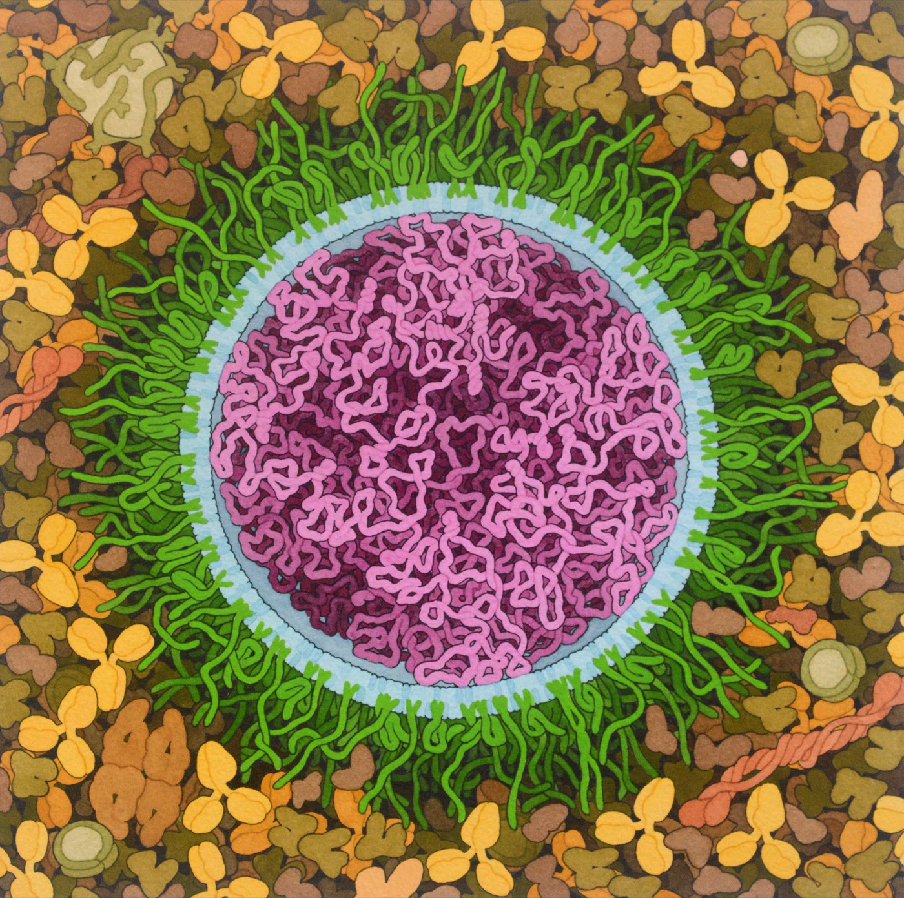

5.2 From DNA to Protein
In 5.1 you saw that DNA can be copied. But copying is not the same as doing anything. A gene has to be read and turned into a working molecule — and that molecule is almost always a protein. This chapter is the bridge from a sequence of letters to something that does a job.
Why proteins are the point
It is easy to finish a DNA lesson thinking DNA is the important molecule and everything else is detail. It is worth turning that around. DNA does almost nothing directly — it is a stored instruction set. Proteins are what actually run a cell:
- Enzymes are proteins. Every chemical reaction in you is sped up by one.
- Channels and pumps are proteins — including CFTR, the chloride pump from the overview.
- Structure is protein: keratin in hair and nails, collagen in skin, actin and myosin in muscle.
- Signals are often proteins — insulin, growth hormone, antibodies.
So when we say a gene "causes" a trait, this is the chain we mean. The gene does not reach out and colour your eyes. It specifies a protein, and the protein does the work.
A gene is a stretch of DNA that specifies one protein. Change the gene and you change the protein. Change the protein and you may change the organism. That is the whole of Unit 5 in three sentences, and it is why cystic fibrosis is a story about a broken pump rather than a story about a broken letter.
RNA — the working copy
DNA does not leave the nucleus. It is too valuable and far too long, and a eukaryotic cell keeps it behind a membrane. So the cell makes a short, disposable copy of just the gene it needs, and sends that out instead. That copy is RNA.
RNA is nearly the same molecule as DNA, with exactly three differences worth memorising:
| DNA | RNA | |
|---|---|---|
| Sugar | Deoxyribose | Ribose (one more oxygen) |
| Bases | A, T, G, C | A, U, G, C — uracil replaces thymine |
| Strands | Double — a helix | Single |
Being single-stranded is what lets RNA leave, fold up and be handled. Being short-lived is a feature, not a flaw: the cell can stop making a protein simply by stopping the copies.
There are three kinds you need, and each is a different job rather than a different molecule:
- mRNA (messenger) — the copy of the gene that travels to the ribosome.
- tRNA (transfer) — carries one amino acid, and has an anticodon that matches one codon.
- rRNA (ribosomal) — part of the ribosome itself.
The central dogma
Put those together and you get the sentence that organises this entire chapter. It has a name — the central dogma of biology — and it names two processes.
![A cell with its nucleus drawn as an inner circle inside the outer cytoplasm. Inside the nucleus, a double-stranded DNA helix has a looping arrow labelled replication pointing back onto itself, and a single arrow labelled transcription leading to a single-stranded RNA molecule. The RNA passes out through a nuclear pore in the nuclear envelope into the cytoplasm, threads through a ribosome, and an arrow labelled translation leads from the ribosome to a growing chain of coloured beads representing amino acids, which folds up into a protein. A line beneath reads: the arrows only run this way.](../images/u5/central-dogma.jpeg)
Transcription and replication are easy to confuse because both involve pairing bases against a template. The difference is what you get and why:
- Replication copies all of the DNA, makes DNA, and happens once, before division.
- Transcription copies one gene, makes RNA, and happens whenever that protein is needed — possibly thousands of times a day.
Transcription — writing the message
Transcription happens in the nucleus. The enzyme RNA polymerase does the work:
- It binds at the start of a gene and unzips just that stretch of the double helix — not the whole chromosome.
- It moves along one strand, the template strand, pairing free RNA nucleotides against it. Same pairing rules as before, except that where the template reads A, the RNA gets U rather than T.
- The finished mRNA peels away, the DNA zips shut behind it, and the message leaves through a pore in the nuclear envelope.
The DNA is unchanged by all of this. A gene can be transcribed over and over without being used up — which is just as well, because a cell making digestive enzymes may need millions of copies.
Watch RNA polymerase do this. The animation from HHMI BioInteractive shows it opening a short stretch of the helix, reading the template strand, and letting the new RNA peel away behind it while the DNA zips itself closed again.
Why the strands run in opposite directions
In 5.1 you met the word antiparallel and were told it mattered. Here is why.
A strand of DNA has a direction, like a one-way street. Chemists label the two ends 5′ and 3′ (said "five prime" and "three prime"), and the important thing is simply that the two ends are different from each other. Every strand runs 5′ at one end to 3′ at the other.
RNA polymerase can only work one way round. It adds each new nucleotide to the 3′ end of the growing RNA, never the other end — so the RNA is always built in the 5′ → 3′ direction. Because the enzyme can only build one way, it can only read one way too. And that is what antiparallel buys you: since the two DNA strands point in opposite directions, only one of them is oriented correctly to be read for any given gene.
That strand is the template strand. The other one gets a name too — the coding strand — because its sequence turns out to match the finished mRNA exactly, apart from having T wherever the RNA has U.
That gives you a free way to check your own work. Transcribe from the template strand, then compare your mRNA with the coding strand. If they do not read the same (allowing for U in place of T), you have used the wrong strand — the single most common mistake in these questions.
![A diagram in three rows, coloured by molecule: DNA blue, RNA coral, amino acids purple. Top row, DNA before transcription: the coding strand reads 5 prime A T G A T C T C G T A A 3 prime, paired with the template strand, which runs 3 prime to 5 prime. Middle row, transcription: RNA polymerase, a grey blob, has opened the double helix. Coral RNA bases are paired with blue template bases inside the opening, the RNA's 5 prime end trails out to the left, and an arrow shows RNA synthesis running 5 prime to 3 prime. The next two template bases, C and A, are still waiting to be read. Bottom row, the finished mRNA reads 5 prime A U G A U C U C G U A A 3 prime, bracketed into the codons A U G (start codon), A U C, U C G and U A A (stop codon), above a chain of three purple amino acids: Met, Ile and Ser.](../images/u5/transcription-translation.jpeg)
Translation — reading the message
Translation happens at a ribosome, out in the cytoplasm. Ribosomes are either floating free or studded along the rough endoplasmic reticulum, and they are where amino acids get joined into a chain.
![A cutaway drawing of a cell. On the left is the round nucleus, with a darker nucleolus inside it, wrapped in the folded membranes of the rough endoplasmic reticulum, which are dotted with ribosomes. At the top, two free ribosomes sit on strands of mRNA in the cytoplasm, each with a purple amino acid chain coming out of it; two finished purple proteins nearby are labelled stays inside the cell. Lower down, ribosomes on the rough ER feed their purple chains into the ER. An arrow leads from the ER to a transport vesicle carrying a protein, then to the Golgi, then to a second vesicle, and finally to a purple channel protein sitting in the cell membrane, labelled goes into the membrane, or out of the cell, and CFTR is built this way. The cytoplasm is labelled.](../images/u5/ribosomes-and-protein-destinations.jpeg)
The message is read three bases at a time. Each group of three is a codon, and each codon specifies one amino acid. A tRNA molecule carrying the matching amino acid pairs its anticodon against the codon, the ribosome links the amino acid onto the growing chain, and the tRNA leaves to fetch another.
Two codons do something special:
- AUG is the start codon. Translation cannot begin until the ribosome finds one — and AUG also codes for methionine, so nearly every protein starts with it.
- UAA, UAG and UGA are stop codons. They code for no amino acid at all. When the ribosome reaches one, it releases the finished chain.
Because there are 4 bases and codons are 3 long, there are 4 × 4 × 4 = 64 codons for only 20 amino acids. So most amino acids have several codons — leucine has six. That surplus is called redundancy, and it matters more than it looks.
Run Figure 5.6 yourself
You now know every step in Figure 5.6, so try running it on a gene you have not seen. The colours are the same as the figure’s. This time you decide which strand is the template, build the RNA, find where the ribosome starts, and translate it — and every time you press Try a new gene, you get a different one.
From blue to purple: run a gene yourself
Interactive- In step 1, explain in one sentence why the other strand could not be the template. Use the word antiparallel.
- In step 3, the codon card lists codons that are not in your gene. Where did they come from? What mistake would give you each one?
- Your gene had leader bases before AUG and a base after the stop codon. Neither became part of the protein. Why not?
Do it yourself
This is the DNA template strand from page 13 of your anchor guide. Transcribe it, then translate it — and use the codon table the way you would use a dictionary, by looking things up rather than remembering them.
Transcribe a gene, then translate it
Interactive- In step 1, try placing a T. Read what comes back. Why can there be no T anywhere in the finished mRNA?
- Twenty-seven bases of DNA produced eight amino acids. Show the arithmetic that connects those two numbers.
- Find leucine in the codon table. How many different codons produce it? Now find methionine and tryptophan. What is different about those two?
- UGA ended your protein. If a mutation turned an earlier codon into UGA, what would happen to the protein — and would it still work?
The genetic code
Here is the full table for reference. Read it in three steps: find the first base down the left, the second across the top, and the third down the right-hand column.
| 1st | U | C | A | G | 3rd |
|---|---|---|---|---|---|
| U | Phe | Ser | Tyr | Cys | U |
| Phe | Ser | Tyr | Cys | C | |
| Leu | Ser | Stop | Stop | A | |
| Leu | Ser | Stop | Trp | G | |
| C | Leu | Pro | His | Arg | U |
| Leu | Pro | His | Arg | C | |
| Leu | Pro | Gln | Arg | A | |
| Leu | Pro | Gln | Arg | G | |
| A | Ile | Thr | Asn | Ser | U |
| Ile | Thr | Asn | Ser | C | |
| Ile | Thr | Lys | Arg | A | |
| Met — start | Thr | Lys | Arg | G | |
| G | Val | Ala | Asp | Gly | U |
| Val | Ala | Asp | Gly | C | |
| Val | Ala | Glu | Gly | A | |
| Val | Ala | Glu | Gly | G |
The code is very nearly universal: AUG means methionine in a bacterium, a banana and a blue whale. That is itself a line of evidence for common ancestry, and it is the reason a human gene can be inserted into bacteria to manufacture human insulin.
Case study — how an mRNA vaccine works
You now know enough to explain a technology that did not exist in most textbooks five years ago.
A traditional vaccine injects a weakened or killed pathogen, or a piece of one, so the immune system learns to recognise it. An mRNA vaccine skips the manufacturing entirely. It injects the message.
- Scientists identify the gene for one protein on the outside of the virus — for SARS-CoV-2, the spike protein.
- They synthesise the corresponding mRNA and wrap it in a lipid nanoparticle so it can cross a cell membrane.
- Your own ribosomes translate it, exactly as in the interactive above, and build spike protein.
- Your immune system meets that protein, recognises it as foreign, and learns it — without ever meeting the virus.
- The mRNA is broken down within days, as all mRNA is.

An mRNA vaccine cannot change your DNA. Look at the direction of the arrows in Figure 5.5 — the central dogma runs DNA → RNA → protein. The mRNA never enters the nucleus, and human cells have no machinery for writing RNA back into DNA. That is not an opinion about vaccines; it is a consequence of the diagram you just built.
One honest footnote, because you will meet it in 5.3: some viruses — HIV, for example — carry an enzyme called reverse transcriptase that can write RNA back into DNA. That is exactly why such viruses are unusual enough to have their own name: retroviruses.
Where this goes next
Stand back and look at what you can now do. Given a strand of DNA and a codon table, you can say exactly which protein a cell will build — every amino acid, in order, start to stop. That is a genuinely powerful thing to be able to do, and it is the first half of this unit's argument.
Which raises an uncomfortable question. If the sequence determines the protein that precisely, what happens when the sequence is wrong? Change one letter and the whole chain downstream is at the mercy of it. Chapter 5.3 changes letters on purpose — six different ways — and then follows one real, single-letter error out into a person's life.
Check your understanding
- A DNA template strand reads T A C G G A T T T A C T. Write the mRNA, then the amino acid sequence. Where does the protein stop, and why?
- Why does the cell bother making an RNA copy at all, rather than sending the DNA itself to the ribosome? Give two reasons.
- A student writes: "Transcription happens in the ribosome." Correct them, and say what does happen in the ribosome.
- The codon CUU codes for leucine. So do CUC, CUA, CUG, UUA and UUG. Predict what would happen if a mutation changed CUU to CUC — and explain why the redundancy of the code makes that outcome likely.
- Explain, using the central dogma, why an mRNA vaccine cannot alter the DNA in your cells. Then explain why a retrovirus is the exception.
Quick check
This part marks itself, and points you back to the right section if something is shaky.
What do biologists actually mean when they say a gene “causes” a trait?
Gene → protein → trait. The gene does not reach out and colour your eyes; it specifies an enzyme, and the enzyme makes pigment. Keeping the protein in the middle of that chain is what turns cystic fibrosis from a story about a broken letter into a story about a broken pump.
A family has hair that snaps easily, and the pattern is traced to one gene. Which account of that link matches how genes work?
Structure is protein — keratin in hair and nails, collagen in skin, actin and myosin in muscle. Put the protein in the middle of every claim you make about a gene, and questions like this answer themselves: find the protein first, then ask what job it fails to do.
Why does a cell send an RNA copy to the ribosome rather than the DNA itself?
Being single-stranded is what lets RNA fold up, leave through a nuclear pore and be handled. Being short-lived is a feature rather than a flaw — a message that lasted forever would be a protein you could never turn off.
A cell has spent the morning making a digestive enzyme and now needs to stop. What about working through RNA makes that straightforward?
A message that lasted forever would be a protein you could never turn off. The cell controls what it makes by controlling how many copies it sends out, which is why a disposable intermediate is worth the trouble of making one.
A liver cell that is not dividing is making thousands of copies of one enzyme. Which process is running over and over?
Transcription and replication both pair bases against a template, which is why they are easy to confuse. The difference is what you get and why: transcription copies one gene, makes RNA, and happens whenever the protein is needed — possibly thousands of times a day.
A skin cell is about to divide and is copying every one of its chromosomes. Which process is this, and what rules out transcription?
Ask two questions and the pair comes apart: what is produced, and how much is copied. DNA and everything means replication, before a division. RNA and one gene means transcription, whenever that protein is wanted.
A student transcribes a gene, then compares their mRNA with the coding strand. The two do not read the same, even allowing for U in place of T. What has gone wrong?
Only one strand is oriented correctly to be read for a given gene — the template strand. Because the mRNA is built against the template, it ends up reading the same as the other strand. Using the wrong strand is the single most common mistake in these questions, and this comparison catches it every time.
For any one gene, only one of the two DNA strands can serve as the template. What makes the other one unusable?
This is what antiparallel is for. One-way enzymes plus opposite-facing strands means the gene itself decides which strand is read, and the strand left over is the one your finished mRNA should match.
An mRNA reads AUG CAU UGA GGU. How many amino acids long is the protein?
AUG gives methionine, CAU gives histidine, and UGA ends it. Notice that the GGU sitting after the stop codon is never translated — it is present in the message and simply never read, which is why a mutation that creates an early stop codon is so damaging.
A finished protein is eight amino acids long, beginning at AUG. What is the shortest stretch of mRNA that could encode it, from the start codon to the stop codon inclusive?
The stop codon occupies three bases and contributes no amino acid, which is the one place this arithmetic usually goes wrong. Work in codons rather than bases and the sum becomes a count of groups of three: eight that are read, one that ends the job.
Why does a single-base change often leave the protein completely unaltered?
Leucine has six codons; CUU, CUC, CUA and CUG all mean leucine, so changing the third base of that codon changes nothing. This surplus is called redundancy, and it is the reason many mutations are silent — which you will use directly in 5.3.
Leucine has six codons, but tryptophan has only UGG. What follows for a single-base change inside a tryptophan codon?
Redundancy is a cushion, and it is not spread evenly. Amino acids with six codons absorb most third-base changes without noticing; the two with a single codon each absorb nothing. Where a mutation falls in the table decides how much it costs.
Why can an mRNA vaccine not change the DNA in your cells?
This is not an opinion about vaccines — it is a consequence of the diagram you built earlier in the chapter. Your ribosomes read the injected message, build spike protein, your immune system learns it, and the message is gone within days. The one genuine exception is a retrovirus, which brings its own enzyme for running the first arrow backwards.
An mRNA vaccine injects no protein at all, yet the immune system ends up meeting the spike protein. Where did that protein come from?
The vaccine supplies a message and borrows the machinery — which is why it can be designed from a sequence alone, without growing the virus anywhere. It also fixes the limit on what it can do: a message is only ever read forwards.